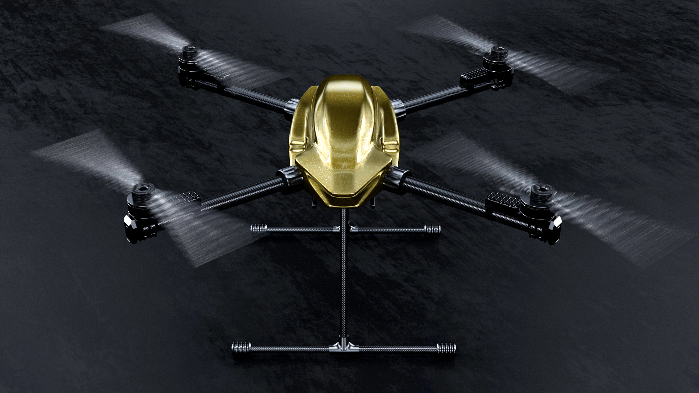
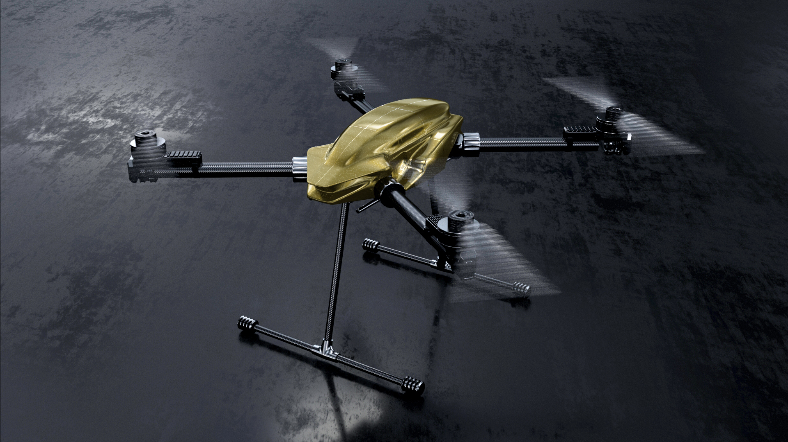
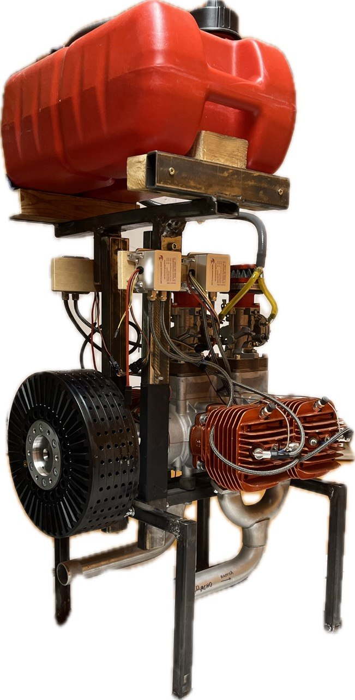

High-capability aircraft for demanding missions
InSky develops specialized aerial platforms for operators who need more capability than conventional professional drones can deliver.
InSky builds aircraft for demanding operational use: useful payload, efficient structures, modular integration, and practical field deployment.

InSky Reach™
A compact professional UAV platform designed for payload, inspection, imaging, and specialized field operations.
Reach is InSky’s lead commercial platform and the current center of the website.
InSky Span™
Span is InSky’s larger platform in development for larger payload missions, difficult-access logistics, and demanding field use.

Built for practical field use
Logistics and aerial transport
For missions where payload delivery matters more than camera-first drone assumptions, InSky platforms are being developed to support compact logistics, field transport, and difficult-access operations.
Public safety and emergency response
Payload flexibility and rapid deployment can create value in public-safety support, emergency logistics, and specialized field response missions.
Infrastructure inspection
Inspection work often benefits from aircraft that can carry more capable payloads, sensors, and support equipment without narrow platform limitations.
Engineered for useful payload
InSky aircraft are designed to maximize practical capability: more useful payload, less wasted structure, and support for real mission integration.
Reach is also being developed for compatibility with established professional accessory workflows.


40 kW generator prototype
InSky has also developed a prototype 40 kW generator system as part of its broader power-system work.
Built around a 3W Modellmotoren 684tsi competition engine directly coupled to an EMRAX 228 axial-flux generator, the project reflects the same engineering direction seen across the aircraft program: compact packaging, high specific output, and unconventional solutions to practical performance problems.
The generator is not currently the company's near-term commercial focus, but it remains an important future capability with potential relevance for hybrid aircraft, persistent operations, and high-power mission systems.